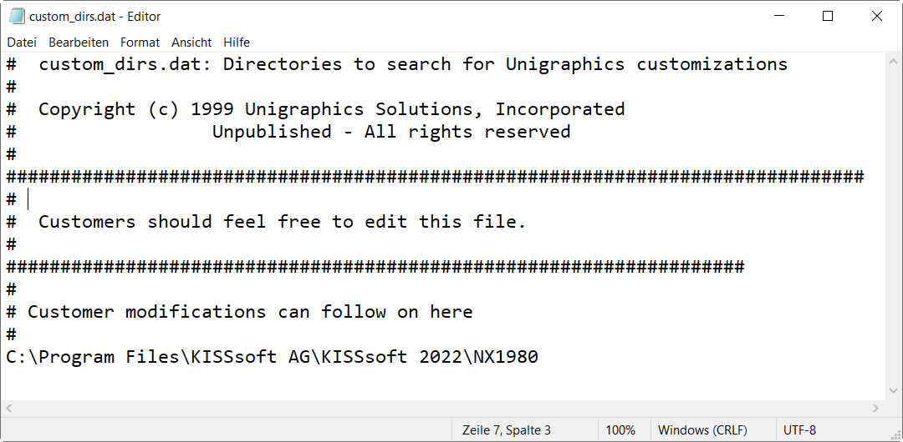
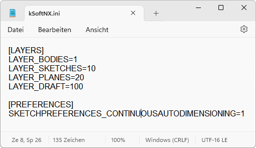

|
|
|


集成 KISSsoft 插件（在 CAD 中的菜单选项）
首先，将提供的文件夹（例如1847）连同其子文件夹，复制到用户可以随时访问的位置。
文件包含KISSsoft 插件菜单选项的定义。该文件的名称因所选语言不同而异。例如，文件名中的代表。其他语言代码为：_d代表，_f代表，_i:代表，_s:代表，_r:代表，_p:代表，_c:代表。您可以将所需语言的文件复制到文件夹中。随后KISSsoft菜单将以该语言显示。
注意：
如果所选语言使用Unicode字体（例如俄语的西里尔字母），则必须在操作系统中将"本地化"设置为该语言（使用该语言的国家/地区）。
KISSsoft也可作为功能区菜单使用。带_e 的英语菜单作为默认设置嵌入在子文件夹中。如果要更改菜单显示的语言，请删除文件夹中所有名称以_e结尾的文件。...子文件夹包含每种可用语言对应的子文件夹（例如用于英语）。您可以将所需语言文件夹的全部内容复制到子文件夹中。随后菜单将以该语言显示。
文件（例如）也存储在此文件夹中，其中包含菜单选项的链接和命令。
您必须为先前复制的文件夹输入路径（例如），输入位置在NX目录中的文件里，以便NX系统知道其要使用的文件的存储位置。

如果要使用的文件在安装目录中不可用，您可以定义一个系统变量，为此明确命名所需路径。
系统变量：
值：所需路径
服务器应作为安装过程的一部分进行注册。然而，如果此步骤未完成，并且KISSsoft接口无法工作，必须注册该插件。
转到KISSsoft安装目录并选择NX1847子文件夹。在其中，双击NX_Register64.bat文件以注册接口。
如果 KISSsoft 插件成功注册，将显示一条消息确认这一点。
要删除注册，请双击文件（位于KISSsoft安装目录中）。随后会显示一条消息，确认注销成功。
为确保KISSsoft图标显示在菜单选项旁边，您还必须设置一个带路径的系统变量，以告诉程序在哪里可以找到KISSsoft图标。
示例：设置一个系统变量并将此值作为路径
KSOFT_ICONS
C:\Program Files(x86)\KISSsoft<version>startup 文件夹中还包含 文件，您可以在其中更改实体、草图、平面和图纸的图层。
您可以使用选项来定义在设计应用程序中修改草图后是否自动创建尺寸。如果禁用此选项，则对于较大的草图可提高性能。
在 NX 中，此选项可在以下路径找到：文件>实用工具>客户默认值>草图>推断约束和尺寸（旧版）>设计应用中的连续自动尺寸（旧版）。

Integrating the KISSsoft Add-in (menu options in CAD)
First, copy the supplied folder, e.g. 1847, with its subfolder, to a location that can be accessed by users at any time.
The file contains the definition for the KISSsoft Add-in menu options. This file has different names to reflect which language has been selected. For example, the in the file name stands for . The other language codes are _d for , _f for , _i: for , _s: for , _r: for , _p: for , and _c: for . You can copy the file for the language you require to the folder. The KISSsoft menu will then be displayed in this language.
Note:
If the selected language uses Unicode fonts (e.g. Cyrillic for Russian), the Localization must be set to this language (a country with this language) in the operating system.
KISSsoft is also available as a ribbon menu. The English menu with _e is embedded as the default setting in the subfolder. If you want to change the language in which the menu is displayed, delete all the files in the folder whose name ends with _e. The ... subfolder contains a subfolder for every available language (e.g. for English). You can copy the entire contents of the folder that has the language you require to the subfolder. The menu will then be displayed in this language.
The file (for example), which contains the links and commands for the menu options, is also stored in this folder.
You must input the path for the previously copied folder, for example, , in the file, in the NX directory, so that the NX system knows where the files it is to use are stored.
If the file to be used is not available in the installation directory, you can define a system variable explicitly naming the required path for this purpose.
System variable:
Value: required path
The server should be registered as part of the installation process. However, if this didn't happen, and the KISSsoft interface doesn't work, you must register the Add-in.
Go to the KISSsoft installation directory and select the NX1847 subfolder. In it, double-click on the NX_Register64.bat file to register the interface.
If the KISSsoft Add-in is registered successfully, a message is displayed to confirm that this is the case.
To delete the registration, double-click on the file in the KISSsoft installation directory. A message is then displayed to confirm that deregistration was successful.
To ensure the KISSsoft icons are displayed next to the menu options, you must also set a system variable with the path, to tell the program where the KISSsoft icons can be found.
Example: Set a system variable and this value as the path
KSOFT_ICONS
C:\Program Files(x86)\KISSsoft<version>The startup folder also contains the file, in which you can change the layers of the bodies, sketches, planes and drawings.
You can use the option to define whether dimensions shall be created automatically after modifying a sketch in design applications. If this option is disabled, performance is improved for larger sketches.
In NX, this option can be found under: File>Utilities>Customer Defaults>Sketch>Inferred Constraints and Dimensions (Legacy)>Continuous Auto Dimensioning in Design Applications (Legacy).